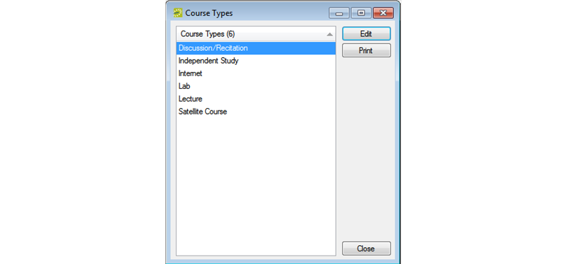

Configure Course Types
When you configure your course types, you have the option of assigning an event type at the course type level. If you do not select an event type at the course type level, then the event type that you selected at the academic unit level will be assigned to room bookings that are created for courses scheduled in {{product}}.
Tip: For information about event types at the academic unit level, see “Configuring Academic Units”.
To configure course types
- On the {{product_campus}} menu bar, click Academic Planning > Configuration > Course Types. The Course Types window opens. This window lists all your synchronized course types.

- Select the course type that you are configuring, and then click Edit. The Course Type dialog box opens. The Description field displays the description for the selected course type; you cannot edit this value.

- On the Event Type dropdown list, select the event type for the course type, and then click OK. The Course Type dialog box closes. You return to the Course Types window with the newly configured course type automatically selected.
Tip: If the appropriate event type is not available, you can configure it. See “Configuring Event Types”.